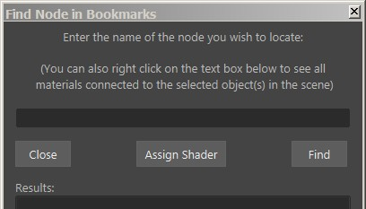
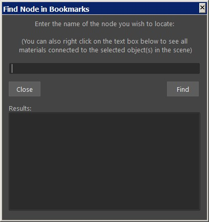

Node Editor Better Bookmarks |
|
VERSION 1.3 |
•Added "assign shader" to the find node in bookmarks window  •Added context menu to the find node in bookmarks window with options to allow to open in new tab |
VERSION 1.2.1 |
•Added Collapse/Expand window icon |
VERSION 1.2 |
•Added find node in bookmarks  •Loading a bookmark now also changes the tab name •Fixed bookmark searching method |
VERSION 1.1 |
•Added "Exit" option in the Tools menu •Fixed issue where a blank group was displayed in the list |
VERSION 1.0 |
•Initial Release. A tool to manage bookmark. Initially written to replace the use of tabs since it is not very efficient if you have many tabs in the Node Editor. You can create groups and categorize bookmarks as well as locate bookmarks that contain specific nodes (version 1.2). And bath open selected bookmarks into tabs as well as batch convert tabs to bookmarks. NOTE: This script is part of the Node Editor Extended Menus and should be run via the context menu.
|